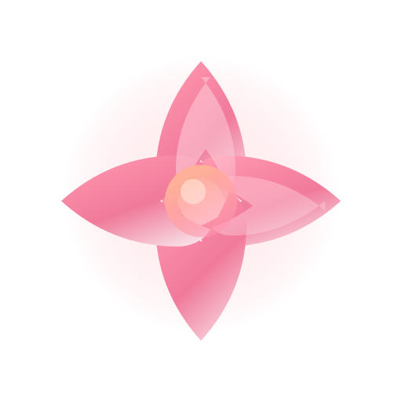

Current
Open leaf M
Familiar letter-M from two soft leaves.
Bloom marks and M-shaped hybrids. Wordmark stays Josefin “Maitri”. Live site still uses the current leaf-M.
Soft petal language that still reads as an open M — closest to keeping brand recognition.
Current
Familiar letter-M from two soft leaves.
Candidate 4
Current M structure, bloom gradients + warm spark in the valley.
Candidate 5
Three bloom lobes as left stem, center peak, right stem.
Candidate 6
Four overlapping petals that still read as an open M.
Earlier abstract friendship marks, kept for contrast.
Candidate 1

Four soft petals + warm core.
Candidate 2
Two petals meeting like care + friendship.
Candidate 3
Three-petal clover in a gentle orbit.